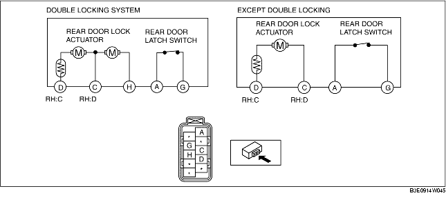

1. The following actuator and switch are integrated with the rear door latch and lock actuator. Inspect the rear door latch and lock actuator according to each inspection procedure for the following items.
